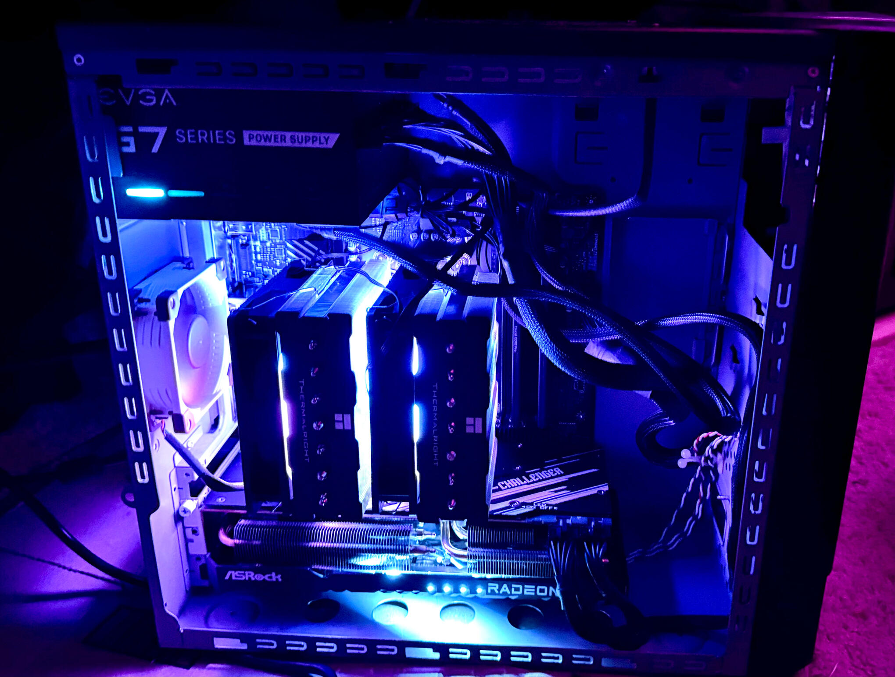
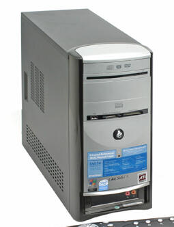
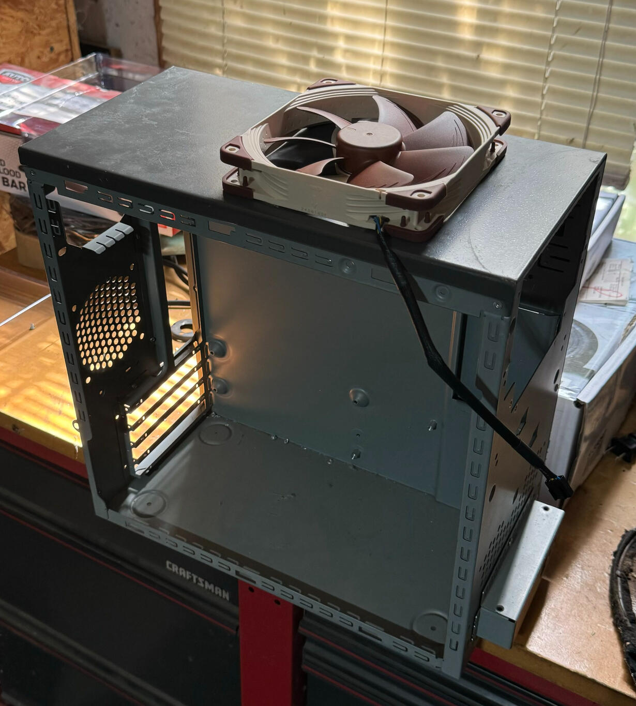
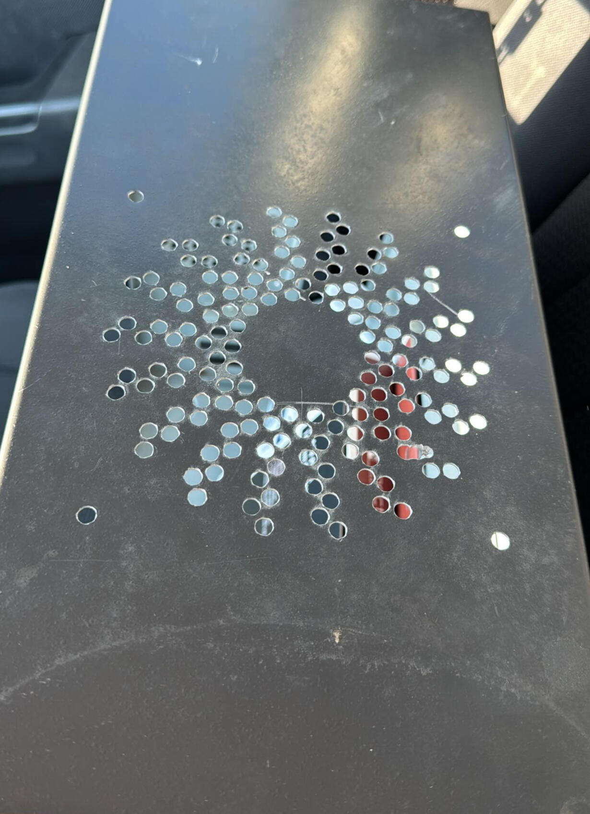
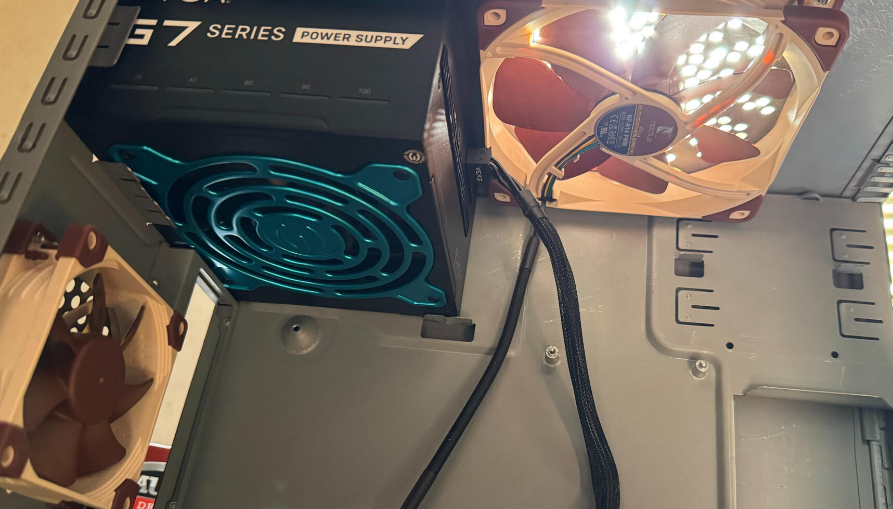

My buddy was off to Marine Corps bootcamp and we spoke of two things before he left:
Once he was shipped off to summer camp, I decided then was a good time to get to work!
I had an idea and a goal, so I went to the best place in the world to fulfill dreams, Facebook Marketplace!
Every good computer should start with a Case. Sleeper builds should especially start with a case. Luckily I met a very nice inidividual selling his grandma's computer who then offered to give me a tattoo. I politely declined but noted this interesting experience.
What I received was a 2004 eMachine in absolutely immaculate condition. Unfortunately, it was MicroATX so space contraints will become a highlight of the build.
See image below for a good look at a Wikipedia version of my little dude.

The problem with modern PCs that wasn't nearly as apparent in 2004 is that they get hot, and heat is bad.
Luckily, modern cases solve this issue by maximizing airflow with usually at least 4 fans of decent size (100 - 120 mm usually).
This case, however, had a singular 80 mm exhaust fan which simply will not survive modern component operating temps.
Well the horrendous image appending this paragraph will give you a good idea.
Luckily, I also have a manufacturing degree and can use a drill (mostly, let's say that the IT pivot was necessary)
With the help of CAD software, a hand drill, and the better half of 2 hours I drilled a bunch of holes into the roof of this case with a gigantic 140mm intake fan.
The resulting images are 1. The Idea for cooling, and 2. The effortful execution.


Now with this gigantic fan ANOTHER problem arises.
The top left of this case is the location for the power supply and there's only one who could ever fit...
The EVGA G7 was 7 mm shy of being perfectly sized (yes, 7 mm)
In fact, the fit was so tight, I had to completely remove the PSU lever to the CPU power because it jutted out ever so slightly
I don't want to refer to myself as an artist (I do), but this was an absolute piece of art that I'm terribly proud of.

I want to mention all the other fun stuff I did. But admittedly, it all kind of.. fit from there on. I did have to drill some holes in the bottom for the GPU, but overall it was a pretty easy process from there on.
The resulting PC was ready for the world to see, including The Odin Project folks.